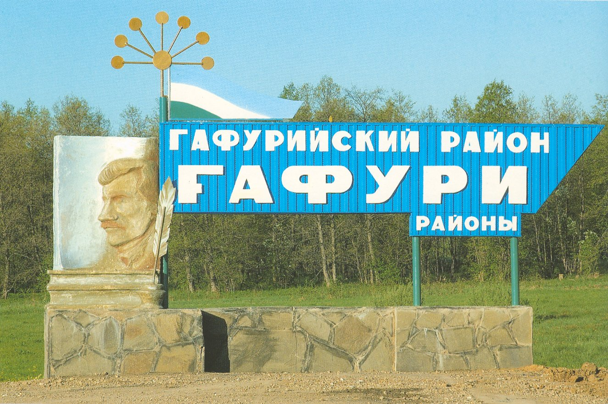
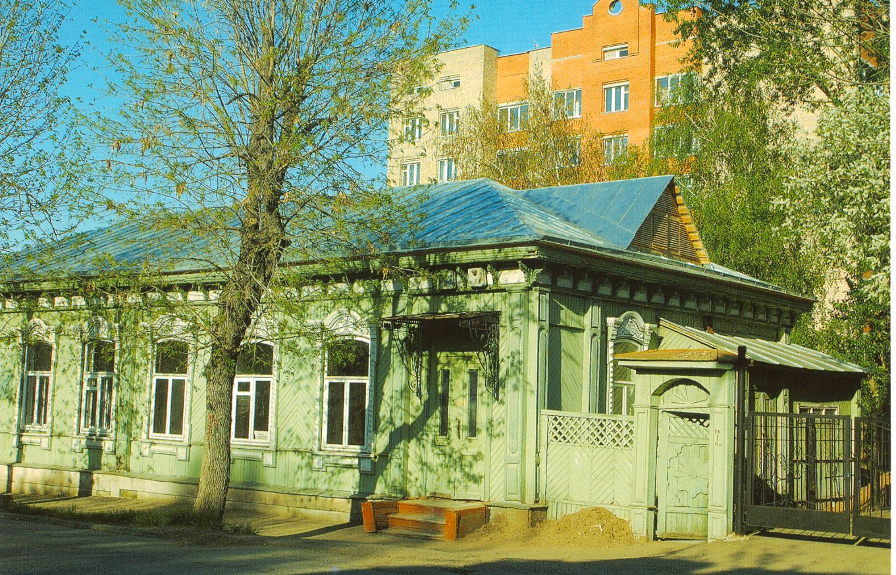
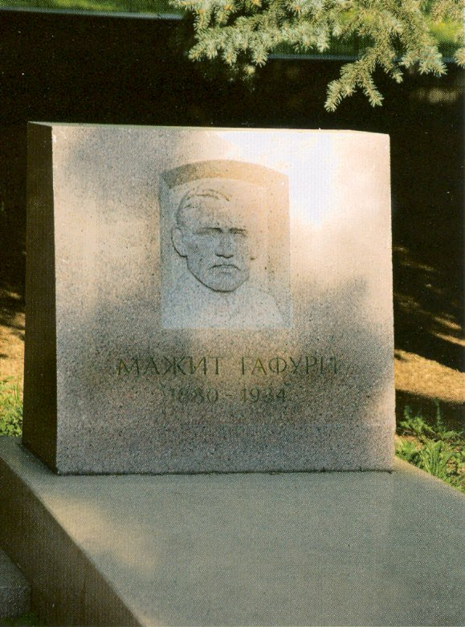
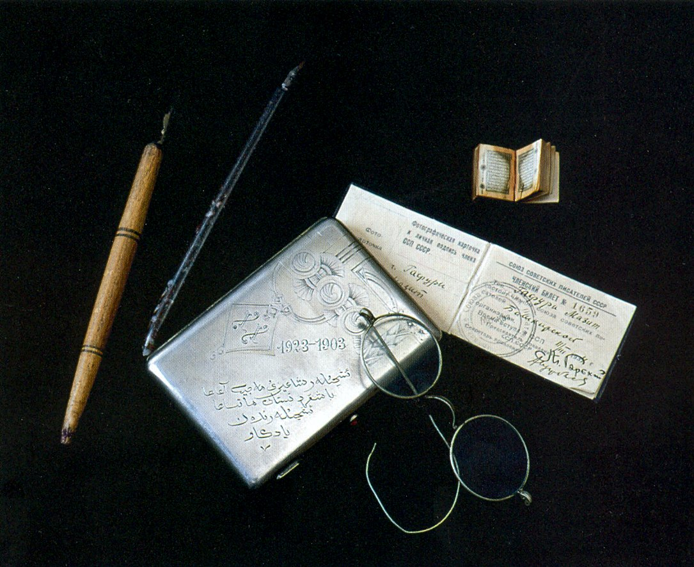
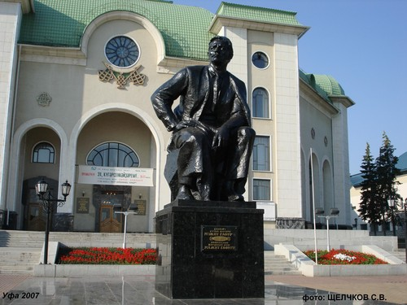
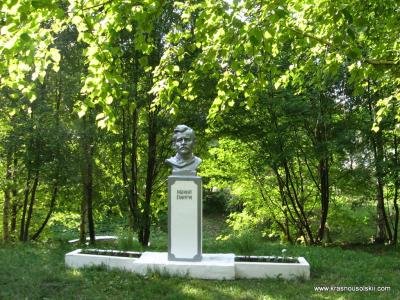
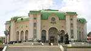
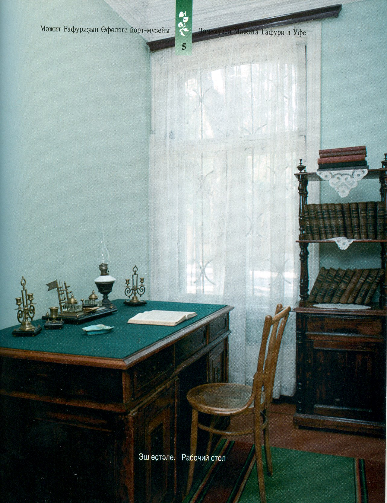

Мажит Гафури / Памятные места
Памятные места
11 фотографий
Откройте фотографию, чтобы посмотреть оригинал.


















Мажит Гафури / Памятные места
11 фотографий
Откройте фотографию, чтобы посмотреть оригинал.







